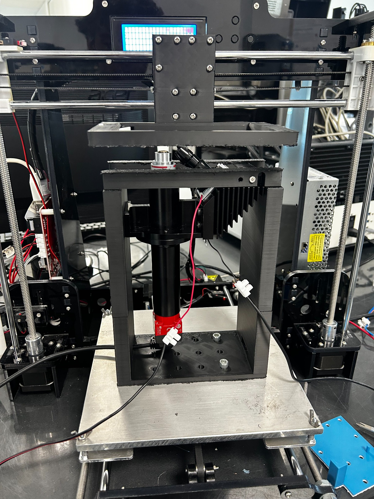
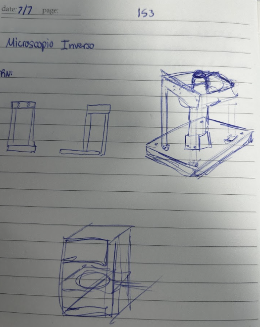
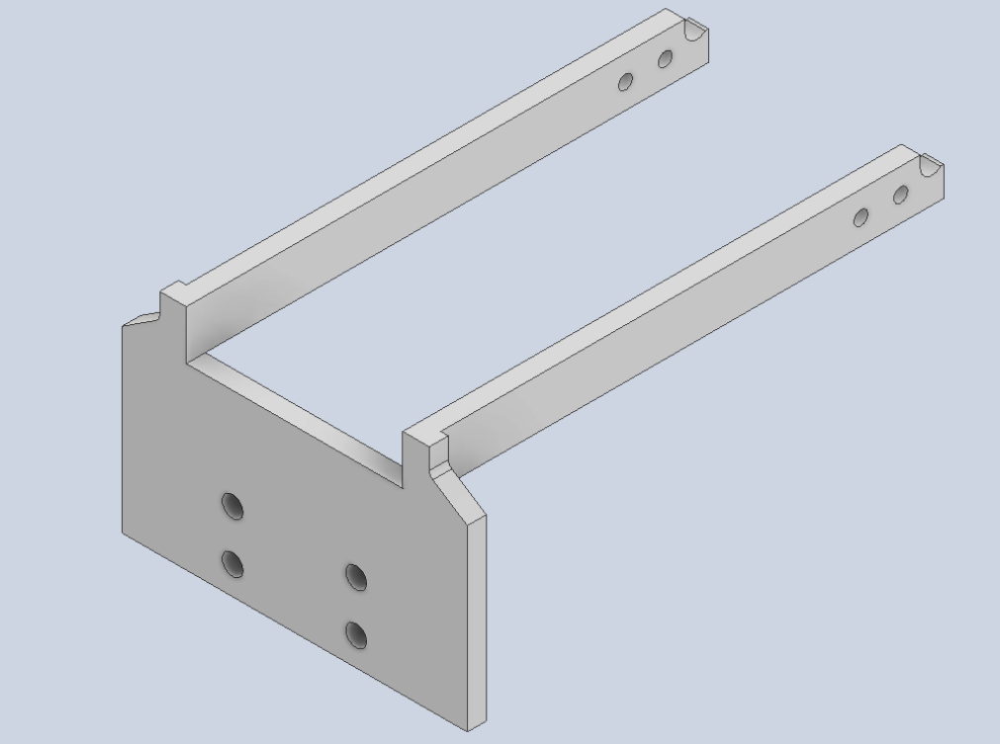
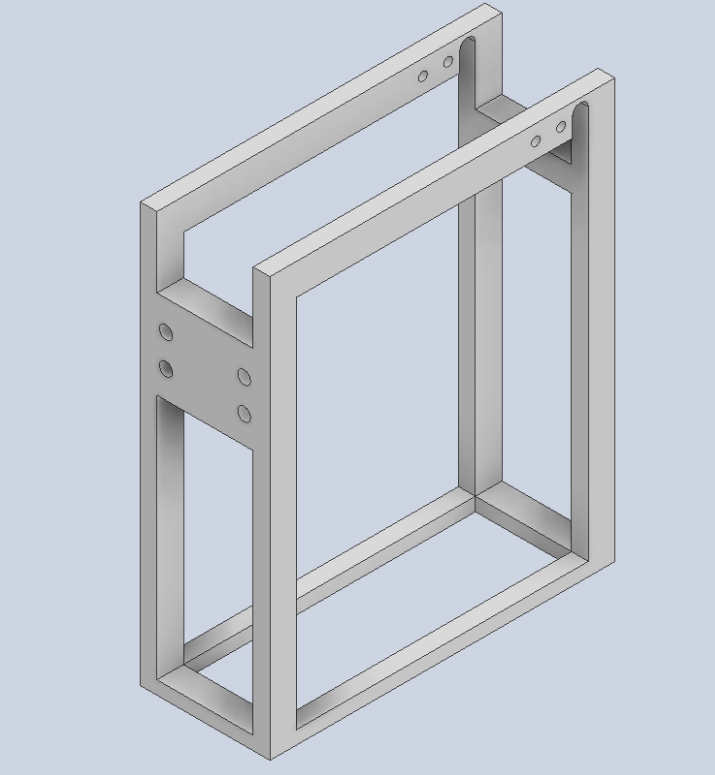
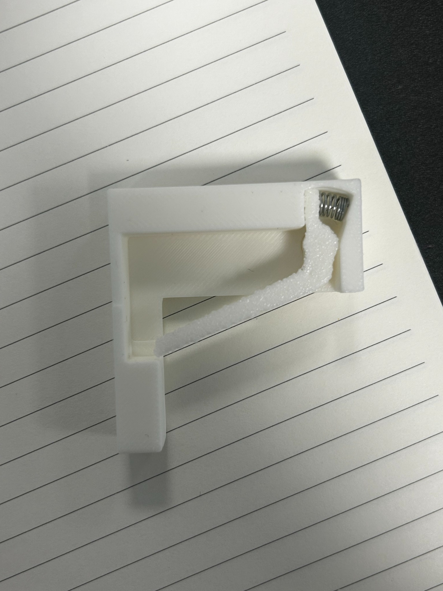
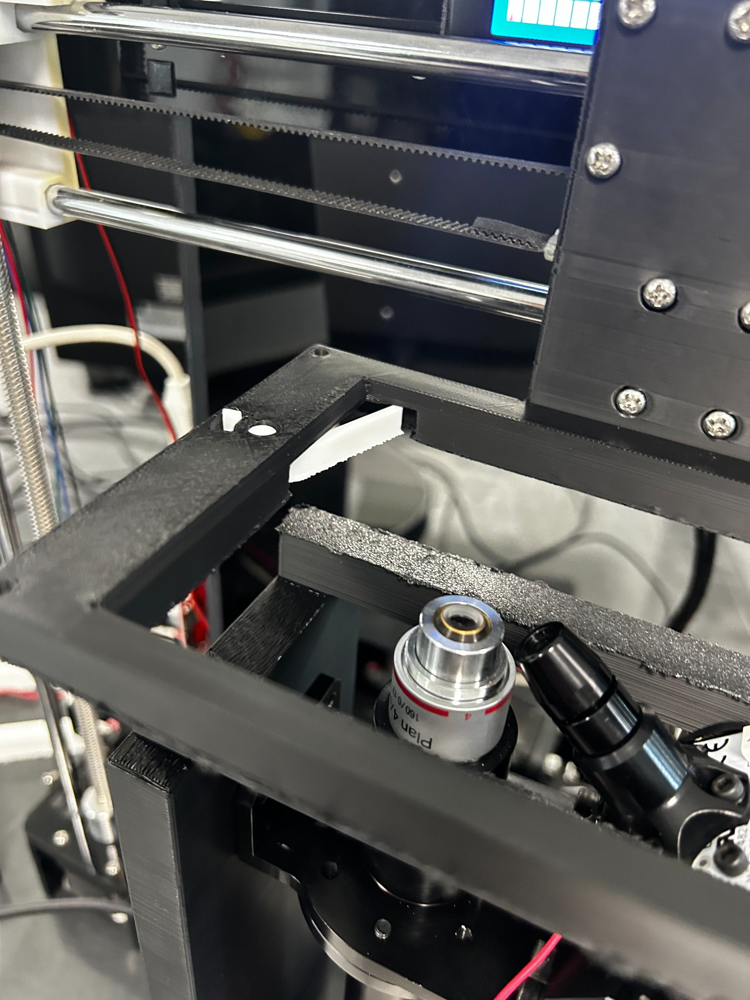
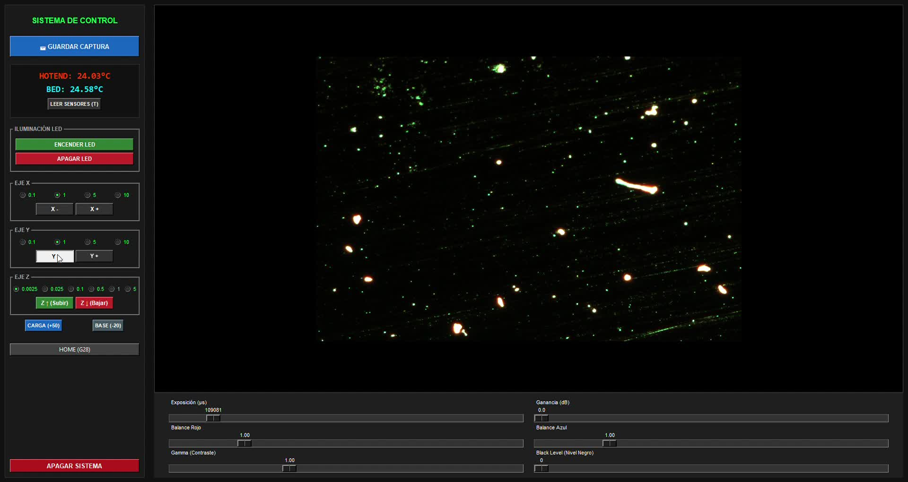
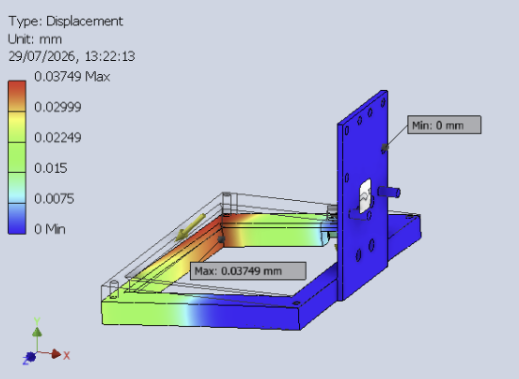
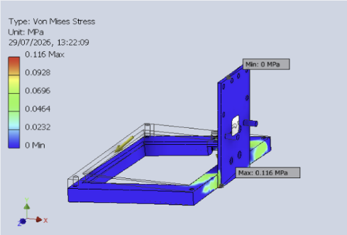

Mecwins · R&D Intern
Motorized microscopy platform
Mecwins asked me to build the first prototype for a new R&D project. The goal was to make their flagship microscopy system lighter and less expensive. I started with a 3D-printer chassis because it already had a motorized gantry. That let me focus on the optics mount and sample holder, particularly how to keep the microscope square to the sample as it moved.
- When
- Summer 2026 · Madrid
- Work
- Mechanical design and prototyping

My contribution
I led the mechanical design and hands-on prototyping of the optical frame and sample holder, working through design reviews with my supervisor. I developed the Python interface and integrated motion and imaging controls.
The support redesign
The optics hung out from the first PLA mount, creating a bending moment at its attachment. When the print cracked near the fasteners, I added a second mounting point at 90° to the first so the two supports could share the load. I checked the revised mount’s alignment with an angle finder.
Design and build
Scroll through the images or use the controls.






Component analysis
A holder that bends can move the sample relative to the optics. I ran a static FEA of the holder, which predicted 0.0375 mm maximum displacement and 0.116 MPa peak stress under the selected load.


Integrated controls
The Python interface connects serial G-code positioning with live imaging, illumination and calibration.
Original recording from testing the control interface.